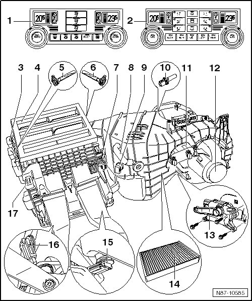

Passenger Compartment Climatronic
Passenger Compartment Climatronic
Before beginning assembly work on electrical system, perform the following items:
• Switch off all electrical consumers.
• Switch off ignition.
• Remove ignition key.

1 A/C Control Head (E87) "2-C" with Climatronic Control Module (J255)
2 A/C Control Head (E87) "4-C" with Climatronic Control Module (J255)
3 Left motor mounting plates
• For the motor allocation on the "4 Zone" A/C unit, refer to --> [ 4 Zone A/C Unit Motor Locations ] 4 Zone A/C Unit Motor Locations
• For the motor allocation on the "2 Zone" A/C unit, refer to --> [ 2 Zone A/C Unit Motor Locations ] 2 Zone A/C Unit Motor Locations
4 Upper part of air distribution housing
5 Left Front Upper Body Outlet Temperature Sensor (G385)
• Removing and installing, refer to --> [ Left Front Upper Body Outlet ] Left Front Upper Body Outlet
6 Right Front Upper Body Outlet Temperature Sensor (G386)
• Removing and installing, refer to --> [ Right Front Upper Body Outlet ] Right Front Upper Body Outlet
7 Right motor mounting plates
• For the motor allocation on the "4-C" A/C unit, refer to --> [ 4 Zone A/C Unit Motor Locations ] 4 Zone A/C Unit Motor Locations
• For the motor allocation on the "2-C" A/C unit, refer to --> [ 2 Zone A/C Unit Motor Locations ] 2 Zone A/C Unit Motor Locations
8 Glove compartment cooling hose
9 Evaporator Temperature Sensor (G308)
• Removing and installing, refer to --> [ Evaporator Vent ] Evaporator Vent
10 Fresh Air Intake Duct Temperature Sensor (G89)
• Removing and installing, refer to --> [ Fresh Air Intake Duct Temperature Sensor ] Fresh Air Intake Duct Temperature Sensor
11 Front Blower Regulation Sensor (Bitron) (G462)
• Removing and installing, refer to --> [ Front Blower Regulation Sensor ] Front Blower Regulation Sensor
12 Front Blower Regulation Motor (Bitron) (V305)
• Removing and installing, refer to --> [ Front Blower Regulation Motor ] Front Blower Regulation Motor
13 Fresh/Recirculating Air Door Motor (V154)
• Removing and installing, refer to --> [ Left Center Vent 4 Zone and Center Vent Adjustment, 2 Zone Climatronic ] Service and Repair
14 Dust and pollen filter with activated charcoal filter element
• Removing and installing, refer to --> [ Dust and Pollen Filter with Activated Charcoal Filter Insert ] Service and Repair
15 Right Footwell Vent Temperature Sensor (G262)
• Removing and installing, refer to --> [ Right Footwell Vent ] Right Footwell Vent
16 Left Footwell Vent Temperature Sensor (G261)
• Removing and installing, refer to --> [ Left Footwell Vent ] Left Footwell Vent